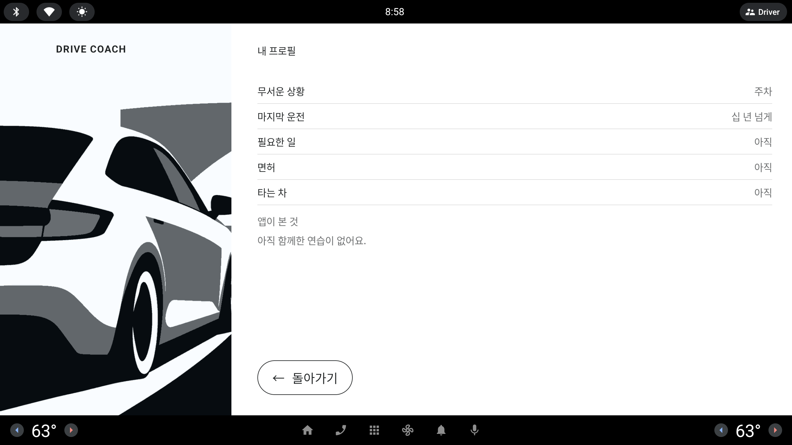

홈 오른쪽 맨 위 눈썹 연수생 · 장롱 10년차 · 목표 아이 등하원 을 누르면 프로필 시트가 열리는데, 화면에는 누를 수 있다는 표시가 없다. 운전자가 읽을 거리를 늘리지 않으면서 이 길을 알리는 방법 다섯 가지.
#연수생/장롱10년차/목표 아이등하원/
- 여기서 프로필 편집으로 가는 가이드가 없어 눌러서 확인해봐야 하는 번거로움이 있음
- 해당 앱에 도움말 혹은 운전자 UX를 고려하여 어떤 방법이 좋을지 여러가지 대안을 5가지 제시해줘— 사용자 피드백 원문, 10/6 저녁 (녹화 기준 태그 inhouse-20261006-5 APK 를 직접 눌러 보고)
기준: 홈은 정차 화면이다(주행 중엔 홈이 없다). 그래도 차 안 화면이라 한눈에 읽히고, 새 문장은 최소로, 터치 영역은 76 dp 이상.
모든 목업은 1/3 축척 · 실제 화면은 약 3배 (853×423 = 2560×1268 dp)점선 = 터치 영역 표시 (설명용, 화면에는 그리지 않음)문구·배치는 다섯 시안 모두 같다 — 눈썹 자리만 다르다
지금
눈썹은 Periwinkle 32 dp 글자 한 줄뿐이다. 밑줄·화살표·아이콘이 없어 장식 문구로 읽히고, 바로 아래 과제·모드 바꾸기 는 밑줄이 있어 오히려 "밑줄 = 누르는 곳" 을 앱이 이미 가르치고 있다. 누르면 프로필 시트(다섯 줄 + 앱이 본 것 + ← 돌아가기)가 오른쪽 열을 덮는다.
홈 — 오른쪽 열 맨 위 회색 한 줄이 눈썹. 누를 수 있다는 표시가 없다.

눈썹을 누르면 열리는 프로필 시트 — 이 화면의 존재를 운전자는 눌러 봐야 안다.
홈 — 눈썹 끝에 연필 + "고치기", 줄 전체가 하나의 터치 영역
DRIVE COACH
연수생 · 장롱 10년차 · 목표 아이 등하원고치기
터치 영역 · 줄 전체 80 dp
오늘은 가볍게, 주차부터 해 볼까요?
후면 직각 주차 · 가이드 모드
처음은 제가 순서대로 함께할게요.
시작 →
과제·모드 바꾸기코치와 고르기
오늘은 편안한 곳에서 주차부터 연습해 봐요.
관리자잘한 주차못한 주차잘한 점검못한 점검시나리오 정지정차출발문 열기문 닫기더 보기
A
연필 · 고치기
눈썹 문장은 그대로 두고 끝에 연필 기호 + "고치기" 를 붙인다. "고치기" 에는 과제·모드 바꾸기 와 같은 밑줄 문법을 쓰고, 터치 영역은 글자가 아니라 줄 전체(높이 80 dp, 폭은 눈썹 끝까지).
터치 영역
지금은 글자 높이(약 44 dp)만큼 — 줄 높이를 80 dp 로 키우고 위아래 여백을 영역에 포함. 제목과 사이 간격은 그대로.
발견성
높음. 연필은 "편집" 의 가장 흔한 기호이고, 밑줄은 이 화면 안에서 이미 배운 문법.
복잡도
글자 셋 + 기호 하나. 색은 눈썹과 같은 Periwinkle 이라 위계(시작 > 링크 줄 > 눈썹)가 안 바뀐다.
첫 실행 / 이후
늘 같은 모양 — 처음에도, 열 번째에도 같은 자리에 있다.
난이도
하. UI 만(Codex) — 아이콘 하나와 클릭 영역 패딩. 모델 변경 없음.
장점
읽을 거리가 가장 적게 늘면서 상시 표시가 생긴다.
눈썹이 "누구를 위한 제안인지" 알려 주는 원래 역할을 잃지 않는다.
주의점
"고치기" 는 프로필 시트의 "바꾸기"(행마다)와 낱말이 다르다 — 하나로 맞추려면 "바꾸기", 다만 그러면 바로 아래 과제·모드 바꾸기 와 겹친다.
눈썹이 길어지면(목표 문구가 긴 프로필) 한 줄을 넘을 수 있어 말줄임 규칙 필요.
홈 — 눈썹이 Lavender 알약(사람 기호 + 문장 + ›)이 된다
DRIVE COACH
연수생 · 장롱 10년차 · 목표 아이 등하원›
터치 영역 · 알약 78 dp
오늘은 가볍게, 주차부터 해 볼까요?
후면 직각 주차 · 가이드 모드
처음은 제가 순서대로 함께할게요.
시작 →
과제·모드 바꾸기코치와 고르기
오늘은 편안한 곳에서 주차부터 연습해 봐요.
관리자잘한 주차못한 주차잘한 점검못한 점검시나리오 정지정차출발문 열기문 닫기더 보기
B
프로필 알약
눈썹을 보조 알약 문법(Lavender 채움 + 질감 그림자)으로 바꾸고 앞에 사람 기호, 끝에 ›. 글자는 Ink 로 올려 "버튼" 으로 읽히게 한다. 문장은 지금 눈썹 그대로라 새로 읽을 것은 없다.
터치 영역
알약 자체 — 높이 78 dp, 폭은 문장 길이. 경계가 눈에 보여 누를 곳이 가장 분명하다.
발견성
가장 높다. 앱의 모든 알약이 누르는 것이라는 규칙과 일치.
복잡도
중. 오른쪽 열에 알약이 셋(프로필 · 시작 · 코치와 고르기)이 되어 "무엇이 주인공인지" 가 약간 흐려진다.
첫 실행 / 이후
늘 같은 모양.
난이도
하. UI 만 — 기존 보조 알약 컴포넌트를 작은 높이로 재사용.
장점
설명이 전혀 필요 없는 형태 — 누르면 무엇인가 열린다는 것이 확실하다.
나중에 프로필이 여러 명(가족 운전자)이 되면 "사람 전환" 알약으로 자연스럽게 자란다.
주의점
코치와 고르기 와 같은 Lavender 알약이 위아래로 둘 — 시선이 분산된다. 테두리만 있는 알약(채움 없음)으로 한 단계 낮추는 변형도 가능.
눈썹이 "포스터 제목 위 작은 글" 이던 컨셉이 사라진다.
홈 — 처음 한 번만: 화면을 어둡게 덮고 눈썹만 밝게, 말풍선 한 줄
DRIVE COACH
연수생 · 장롱 10년차 · 목표 아이 등하원
오늘은 가볍게, 주차부터 해 볼까요?
후면 직각 주차 · 가이드 모드
처음은 제가 순서대로 함께할게요.
시작 →
과제·모드 바꾸기코치와 고르기
오늘은 편안한 곳에서 주차부터 연습해 봐요.
관리자잘한 주차못한 주차잘한 점검못한 점검시나리오 정지정차출발문 열기문 닫기더 보기
여기를 누르면 프로필을 바꿀 수 있어요.
아무 곳이나 누르면 닫혀요.
C
처음 한 번 코치 마크
프로필이 처음 만들어진 뒤 홈에 처음 들어왔을 때 한 번만, 화면을 Ink 62% 로 덮고 눈썹 자리만 뚫어 밝힌 뒤 Paper 말풍선 한 줄을 띄운다. 아무 곳이나 누르면 닫히고 다시는 안 뜬다(관리자 준비실 "기록 초기화" 로 되살림).
터치 영역
덮개 전체(닫기). 눈썹 자체의 터치 영역은 지금 그대로라 A 와 함께 써야 76 dp 를 넘는다.
발견성
첫 회에는 가장 강하다. 그 뒤에는 다시 지금과 같다 — 잊으면 찾을 길이 없다.
복잡도
평소 홈은 0. 첫 회에만 탭 하나가 늘어난다.
첫 실행 / 이후
첫 실행 전용. 이후는 다른 장치(A·B·E)가 필요.
난이도
중. UI(덮개·구멍·말풍선, Codex) + "봤음" 플래그 저장(모델, Claude — 프로필 파일 옆 한 칸).
장점
평소 화면을 하나도 바꾸지 않는다 — 포스터 컨셉 보존.
시연 영상에서 "처음 쓰는 사람을 이렇게 안내한다" 는 한 컷이 된다.
주의점
첫 탭을 덮개가 먹는다 — 바로 시작 을 누르려던 운전자는 한 번 더 눌러야 한다.
차 안 화면에서 덮개형 튜토리얼은 "광고 팝업" 처럼 느껴질 수 있고, 시연 프리셋에서는 꺼 둬야 대본이 안 바뀐다.
① 홈 — 오른쪽 위 "?" 단추 하나
DRIVE COACH
?
터치 영역 · 90 dp
연수생 · 장롱 10년차 · 목표 아이 등하원
오늘은 가볍게, 주차부터 해 볼까요?
후면 직각 주차 · 가이드 모드
처음은 제가 순서대로 함께할게요.
시작 →
과제·모드 바꾸기코치와 고르기
오늘은 편안한 곳에서 주차부터 연습해 봐요.
관리자잘한 주차못한 주차잘한 점검못한 점검시나리오 정지정차출발문 열기문 닫기더 보기
② "?" 를 누르면 — 한 장짜리 도움말 시트 (프로필 시트와 같은 자리·모양)
DRIVE COACH
도움말 · 홈
이 화면에서 할 수 있는 것
맨 위 이름 줄
내 프로필을 보고 바꿔요. 첫 과제와 코치 말투가 여기에 맞춰져요.
›
과제·모드 바꾸기
다른 과제나 가이드 · 힌트 · 평가 모드를 직접 골라요.
›
코치와 고르기
코치와 이야기하며 오늘 할 것을 정해요.
›
예약 카드
예약한 시험장이 있을 때만 보여요. 누르면 그 연습으로 가요.
›
줄을 누르면 그 자리로 바로 가요. 차가 움직이면 도움말은 닫혀요.
← 돌아가기
D
도움말 한 장
홈 오른쪽 위에 둥근 "?" 단추(Lavender, 90 dp). 누르면 프로필 시트와 같은 자리에 도움말 시트 한 장: 홈의 네 요소를 작은 도식(해당 부분만 Signal)과 한 줄 설명으로. 줄을 누르면 그 기능으로 바로 간다 — 도움말이 곧 바로가기.
터치 영역
"?" 90 dp 원 · 시트의 각 줄 높이 160 dp · 돌아가기 보조 알약.
발견성
"?" 는 보편 기호라 찾기 쉽지만, 프로필로 가는 길은 두 단계(? → 이름 줄)가 된다. 눈썹 자체의 표시 문제는 그대로.
복잡도
홈에 기호 하나. 시트는 읽을 거리가 가장 많다(네 줄) — 정차 중에만 열리고 움직이면 닫힌다.
첫 실행 / 이후
언제든 같은 곳. 다른 화면(과제 시트·리포트)으로 넓히기 쉽다.
난이도
중. UI 새 시트 하나(Codex) + 문구(시드) + 시트 상태 하나(모델, 작음). 화면마다 넓히면 그만큼 늘어난다.
장점
사용자가 말한 "도움말" 에 가장 정직하게 답한다 — 앱 전체 설명서의 첫 장.
심사·발표에서 "처음 쓰는 사람도 혼자 쓴다" 를 보여 주기 좋다.
주의점
운전 앱의 도움말은 대개 안 열린다 — 이것만으로는 원래 문제(눈썹이 버튼인 줄 모름)가 풀리지 않는다.
오른쪽 위는 시스템 바 "Driver" 단추 바로 아래라 손이 겹칠 수 있다.
홈 — 코치가 처음 한 번 말해 주고, 눈썹에는 옅은 밑줄이 늘 남는다
DRIVE COACH
연수생 · 장롱 10년차 · 목표 아이 등하원
터치 영역 · 줄 전체 80 dp
오늘은 가볍게, 주차부터 해 볼까요?
후면 직각 주차 · 가이드 모드
처음은 제가 순서대로 함께할게요.
시작 →
과제·모드 바꾸기코치와 고르기
프로필은 맨 위 이름 줄을 누르면 바꿀 수 있어요.
관리자잘한 주차못한 주차잘한 점검못한 점검시나리오 정지정차출발문 열기문 닫기더 보기
E
코치가 알려 주기
앱의 본체인 목소리로 알린다. 프로필이 처음 만들어진 뒤 첫 홈에서 코치가 인사 다음에 한 문장 — "프로필은 맨 위 이름 줄을 누르면 바꿀 수 있어요." — 을 TTS 로 말하고, 같은 문장이 맨 아래 말 자막 줄(SpeechFooter)에 남는다. 눈썹에는 과제·모드 바꾸기 와 같은 계열의 옅은 Periwinkle 밑줄을 늘 둔다.
터치 영역
A 와 같이 줄 전체 80 dp.
발견성
첫 회에는 귀로 듣고 눈으로 확인(자막) — 덮개 없이 강하다. 이후에는 밑줄 하나뿐이라 A 보다 약하다.
복잡도
홈에 새 요소 0 — 자막 줄은 이미 있는 자리, 밑줄은 글자 장식.
첫 실행 / 이후
말은 한 번(또는 처음 두 번)만. 같은 문장을 매번 들으면 소음이 된다.
난이도
하~중. 모델(Claude): 홈 진입 멘트에 한 문장 + "들려줬음" 플래그. UI(Codex): 밑줄. 숫자 없는 문장이라 규칙 위반 없음.
장점
"화내지 않는 조수석" 컨셉 그대로 — 사람 강사가 옆에서 알려 주는 방식. 화면에 읽을 것을 더하지 않는다.
나중에 프로필 시트 · 과제 바꾸기 등 다른 숨은 길도 같은 방식으로 한 번씩 알려 줄 수 있다.
주의점
소리를 끈 차, 다른 소리가 나는 상황에서는 놓친다 — 자막이 남지만 다음 TTS 가 오면 지워진다.
홈 첫 멘트가 길어진다(인사 + 제안 + 안내) — 안내는 제안 문장 뒤 짧은 틈을 두고.
다섯 시안 비교
평소 홈에 보이는 표시
첫 실행
열 번째 방문
프로필까지 탭
새로 읽을 것
터치 영역
난이도 · 누가
A
연필 + 고치기
보임
보임
1
세 글자
줄 전체 80 dp
하 UI(Codex)
B
알약 + ›
보임
보임
1
없음
알약 78 dp
하 UI(Codex)
C
없음
덮개 + 말풍선
지금과 같음
1 (첫 회 +1)
첫 회 두 줄
지금 그대로 — A 필요
중 UI + 플래그(모델)
D
"?" 단추
찾아야 함
찾아야 함
2 (? → 줄)
시트 네 줄
"?" 90 dp · 줄 160 dp
중 UI 새 시트 + 문구
E
옅은 밑줄
코치 음성 + 자막
밑줄만
1
없음(들음)
줄 전체 80 dp
하~중 멘트·플래그(모델) + 밑줄(UI)
"새로 읽을 것" = 평소 홈에 더해지는 글자. 모든 시안이 정차 화면에서만 보인다 — 차가 움직이면 홈 자체가 없다(절대 규칙 10).
추천
A + E — 늘 보이는 연필 하나, 처음 한 번은 코치가 말로
A 가 상시 표시(연필 + "고치기", 줄 전체 80 dp)를 맡아 눈썹의 위계를 지키면서 누를 곳임을 알리고, E 의 첫 홈 한 문장이 덮개 없이 그 자리를 짚어 준다 — 화면에 더하는 것은 세 글자와 기호 하나, 나머지는 이 앱의 본체인 목소리로. E 의 밑줄은 A 의 "고치기" 밑줄과 겹치므로 뺀다.
D(도움말 한 장)는 원래 문제를 풀지 못해 지금은 미루고, 발표에서 "처음 쓰는 사람" 장면이 필요하면 C 대신 E 를 영상에 담는다. 구현: UI 아이콘·영역은 Codex, 첫 홈 멘트 한 문장 + "들려줬음" 플래그는 Claude(관리자 프리셋은 들려준 상태로 시작 — 대본 불변).